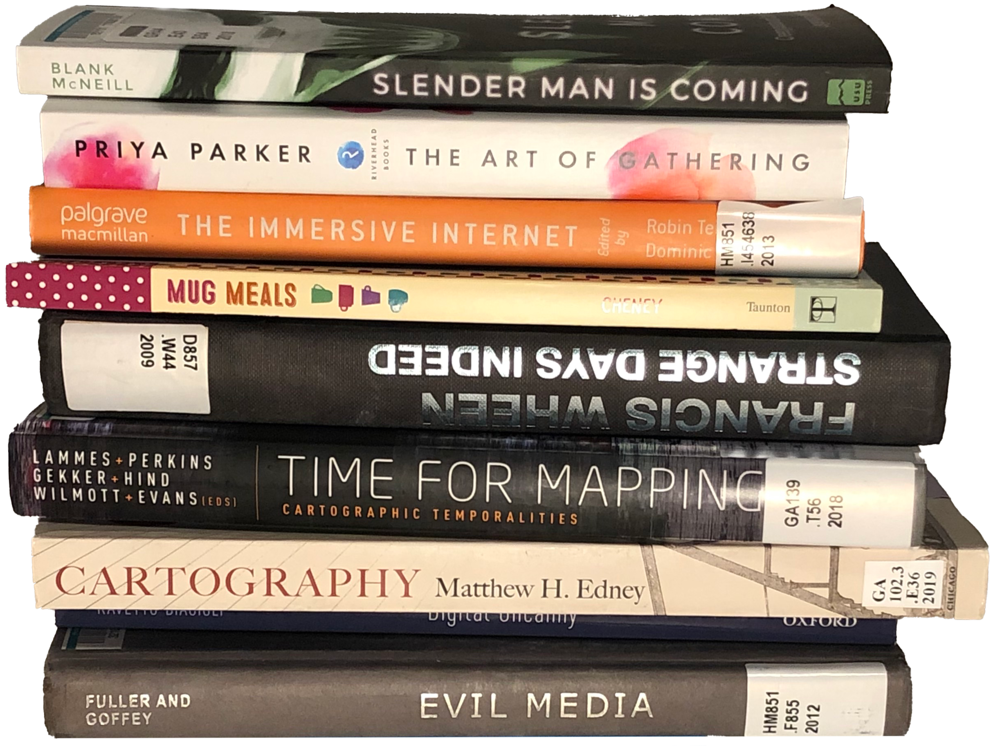

Currently I have a stack of mostly thesis-related books with a couple of extra thrown in.
I'm writing on Google Street View as a medium and how two artists, Jon Rafman and Michael Wolf,
use it in their own practices. I don't know right now I hate talking about my thesis. It's all consuming right now and the last thing that I want right now is to give it more mental space when it's already eaten so much.
I've started saying Google Street View when I mean other things. Sometimes I absentmindedly type it in when trying to go somewhere. But anyway, that's what most of these books are for, my thesis. I got some stuff on map-making,
(Cartography by Matthew Edney, Time for Mapping edited by Lammes et al.), some stuff on digital art (
Evil Media by Fuller and Goffey, Digital Uncanny by Ravetto, The Immersive Internet edited by Tiegland and Power),
I was originally going to talk about creepypastas so I got some books on that (Slender Man is Coming by Blank and McNeill),
and then I got some other books (The Art of Gathering by Parker which Laurel gave us and Mug Meals by Cheney because
I'm basically cooking with microwave these days).